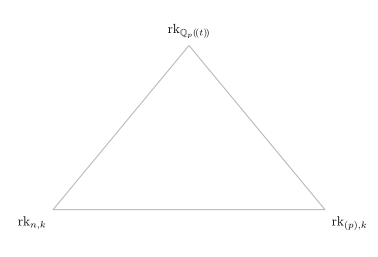
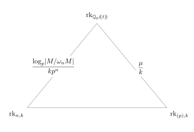
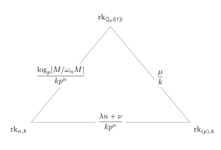

Sylvester rank functions
Iq Souza
Seminario de Álgebra, Geometría y Topología
Universidad Complutense de Madrid
3 de noviembre, 2026
Over a field \mathbb{F}
For A \in \operatorname{Mat}_{n\times m}(\mathbb{F}), the following are equal:
Consider the matrix A = \begin{pmatrix}1 & 2 & 3\\ 4 & 5 & 6\\ 7 & 8 & 9\end{pmatrix} over \mathbb{Z}.
Definition (R associative, unital ring)
A Sylvester matrix rank function on R is a map \operatorname{rk}\colon \operatorname{Mat}(R) \to \mathbb{R}_{\geq 0} that associates to each rectangular matrix A over R a non-negative real number \operatorname{rk}(A) satisfying:
R = \mathbb{C}[t,t^{-1}]
The action on \mathbb{C}^N
Consider the 1\times 1 matrix x = t-1 in \mathbb{C}[t,t^{-1}].
Identify \mathbb{C}^N with the vector space \mathcal{P}_N all complex sequences \{a_j\}_{j\geq 0} which are N-periodic: a_j = a_{j+N} for all j \geq 0.
Fourier transform
R = \mathbb{C}[t,t^{-1}] has a field of fractions \mathbb{C}(t), rational functions in t.
L^2-integrable functions on the circle
von Neumann rank
Definition
Ranks from finite quotients
\ell^2(G)
Lück approximation
Ranks through \log size
Examples
Let F be a number field, that is, a finite extension of \mathbb{Q}. Denote by \mathcal{O}_F its ring of integers.
Ideal class group
Growth of h(F)
Iwasawa’s growth formula (1959)
Examples
Iwasawa rank triangle
Convergence inside \mathbb{P}(\Lambda)
Let A\in\operatorname{Mat}_{r\times s}(\Lambda) and M=\operatorname{coker}(A)=\Lambda^r/A\Lambda^s. Assume M is torsion and M/\omega_nM is finite for n\gg0.



(S., 2026) The triangle equality is
\boxed{ \frac{\log_p|M/\omega_nM|}{kp^n} = \frac{\mu}{k} + \frac{\lambda n+\nu}{kp^n} }
Equivalently,
\boxed{ \log_p|M/\omega_nM| = \mu p^n+\lambda n+\nu }
For the Iwasawa module of the tower this becomes (🤨)
\boxed{ v_p\!\left(h(F_n)\right) =\mu p^n+\lambda n+\nu. }
Questions?
How big is your matrix?
Depends who you ask…